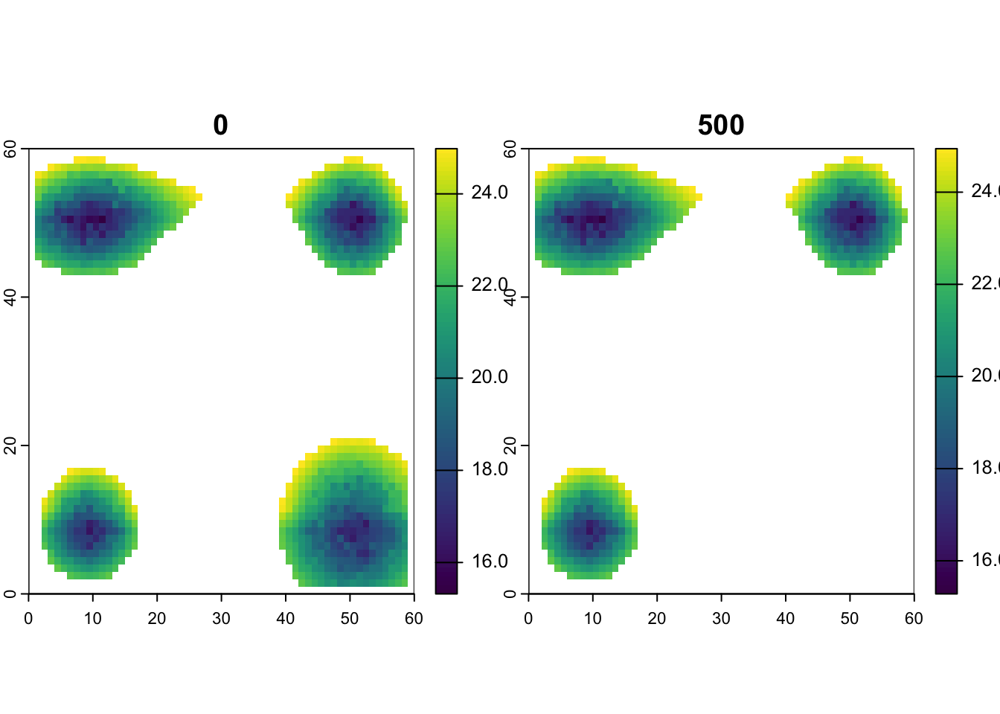
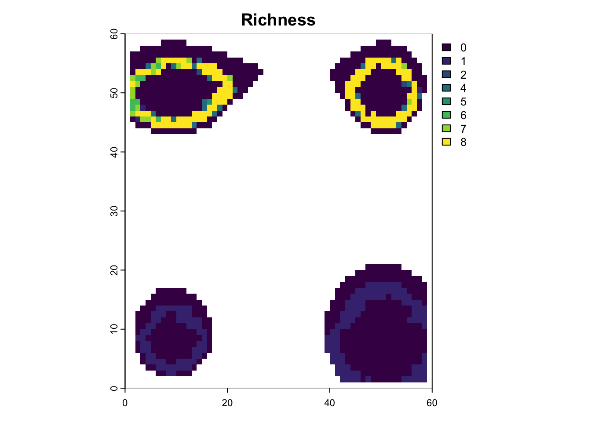

source("support.R")
# packages to load and install if necessary
load_install_pkgs(c("gen3sis","terra", "raster", "here", "ape", "phytools", "picante"))3 üèùÔ∏è Island Hopping
This practical uses a theoretical archipelago system which experiences changes in sea level, uplift, and temperature through time (Hagen et al 2024). Each site (1x1 km), features temperature (i.e. mean, minimum and maximum temperature) and has a landscape structure that is generated by approximating topography, uplift dynamics, and a lapse rate of temperature with elevation. Additionally, it incorporates global temperature and sea level changes dating back to the past 5 million years (Ma).
First make sure our packages are loaded.
You can look at an animation of the landscape here. We’ll also have a quick look now.
{kind=link}
Dynamic Island Landscape
# load landscapes
lc <- readRDS(file.path("data", "landscapes", "islands","landscapes.rds"))
# get names of landscape variables
names(lc)[1] "elevation" "mean_temp" "min_temp" "max_temp" "patch" # get first time step
first_step_pos <- ncol(lc$mean_temp)
# get first 10 sites of mean temperature for the 2 last time steps and the first (oldest) time step
lc$mean_temp[100:110, c(1:4, first_step_pos)] x y 0 1 500
100 39.5 58.5 NA NA NA
101 40.5 58.5 NA NA NA
102 41.5 58.5 NA NA NA
103 42.5 58.5 NA NA NA
104 43.5 58.5 NA NA NA
105 44.5 58.5 NA NA NA
106 45.5 58.5 NA NA NA
107 46.5 58.5 NA NA NA
108 47.5 58.5 NA 23.82152 NA
109 48.5 58.5 NA 23.56207 NA
110 49.5 58.5 24.89379 23.39746 24.85717# plot mean_temp for first and last time step
plot(rast(lc$mean_temp[ ,c(1:3, first_step_pos)]))
Look to see if there are any temporal trends in temperature or elevation.
par(mfrow=c(1,2))
# plot the change in mean tempereature through time
mean_temperatures <- colMeans(lc$mean_temp[, 3:ncol(lc$mean_temp)], na.rm=T)
plot(seq(from=0, to = -5, by=-0.01),mean_temperatures , xlab="time (Ma)", ylab="mean temperature", type='l')
# plot the change in mean elevation through time
mean_elevation <- colMeans(lc$elevation[, 3:ncol(lc$elevation)], na.rm=T)
plot(seq(from=0, to = -5, by=-0.01), mean_elevation, xlab="time (Ma)", ylab="mean elevation", type='l')
Model 1: Config Time ⏰
Open the configs/config_islands_simple_Day1Prac3_M1.R script and have a look at it.
Once you are done, run a simulation. Note that we’re using a start time of 50 with 10-thousand-year time steps. So only the last 500 thousand years rather than the full 5 million. We will do this to keep things small.
# run simulation
sim_m1 <- run_simulation(config = "configs/config_islands_simple_Day1Prac3_M1.R",
landscape = "data/landscapes/islands",
output_directory = "output/islands")Investigate the output
sim_m1 <- readRDS("output/islands/config_islands_simple_Day1Prac3_M1/sgen3sis.rds")# visualize the outputs
plot_summary(sim_m1)
# plot richness from summary in custom fashion, jsut to be familiar with the output
na_mask <- is.na(lc$elevation[,"0"])
rich_m1 <- sim_m1$summary$`richness-final`
rich_m1[na_mask,3] <- NA
plot(rast(rich_m1, type="xyz"), main="Richness")
Pick a couple of random time points to look at specifically.
# plot richness at time step 32 using saved data
sps32 <- readRDS("output/islands/config_islands_simple_Day1Prac3_M1/species/species_t_32.rds")
lc32 <- readRDS("output/islands/config_islands_simple_Day1Prac3_M1/landscapes/landscape_t_32.rds")
plot_richness(sps32, lc32)# plot richness at time step 12 using saved data
sps12 <- readRDS("output/islands/config_islands_simple_Day1Prac3_M1/species/species_t_12.rds")
lc12 <- readRDS("output/islands/config_islands_simple_Day1Prac3_M1/landscapes/landscape_t_12.rds")
plot_richness(sps12, lc12)Now look at the phylogeny
# Now lets look at the Phylogeny
library(ape)
phy_m1 <- read.nexus("output/islands/config_islands_simple_Day1Prac3_M1/phy.nex")
par(mfrow=c(1,1))
plot(phy_m1)
Model 2: Customise üíÖ
Lets start changing features of the config and compare the outputs to our first model.
# load in config M1
conf_m1 <- create_input_config("configs/config_islands_simple_Day1Prac3_M1.R")
# load in config M2
conf_m2 <- create_input_config("configs/config_islands_simple_Day1Prac3_M2.R")
# previously, in M1, populations need 10 time steps to complete speciation
conf_m1$gen3sis$speciation$divergence_threshold[1] 10# now populations only need 5 time steps to complete speciation
conf_m2$gen3sis$speciation$divergence_threshold[1] 5#We have also change the observer function to save the presence/absence matrix for each time step.
# see original config
conf_m1$gen3sis$general$end_of_timestep_observer function (data, vars, config)
{
plot_richness(data$all_species, data$landscape)
save_species()
}
<environment: 0x14b667dc0># see modeified config
conf_m2$gen3sis$general$end_of_timestep_observer function (data, vars, config)
{
par(mfrow = c(2, 2), mar = c(2, 1, 1, 1))
for (sp_i in 1:4) {
plot_species_presence(data$all_species[[sp_i]], data$landscape)
}
par(mfrow = c(1, 1))
save_species()
}
<environment: 0x10ba1e518>Run M2!
# run the new model
sim_m2 <- run_simulation(config="configs/config_islands_simple_Day1Prac3_M2.R", landscape="data/landscapes/islands", output_directory="output/islands")# original dynamics
plot_summary(sim_m1)
# modified dynamics
sim_m2 <- readRDS("output/islands/config_islands_simple_Day1Prac3_M2/sgen3sis.rds")
plot_summary(sim_m2)Model 3: SpecialiseüèùÔ∏è
The differences between M1 and M2 are predictable. Speciation happens a bit faster in M2, and you end up with more species. Overall, however, the patterns of richness are pretty similar. This suggests that this change in the rate of speciation isn’t having a big impact on geographic variation in where species are forming (at least from a first glance). So let’s try a new model that has a few more tweaks to see a more measurable effect.
#load in the config for model M3
conf_m3 <- create_input_config("configs/config_islands_simple_Day1Prac3_M3.R")
# take a look at the initialisation
conf_m3$gen3sis$initialization$initial_abundance
[1] 1
$create_ancestor_species
function (landscape, config)
{
co <- landscape$coordinates
pv <- landscape$environment[, "patch"]
new_species <- list()
manual_traits <- list(dispersal = c(10, 7.5, 5, 2.5), temp_niche_width = c(0.5,
1, 2, 4))
for (sp_i in 1:4) {
new_species[[sp_i]] <- create_species(names(pv[pv ==
sp_i]), config)
new_species[[sp_i]]$traits[, "dispersal"] <- manual_traits$dispersal[sp_i]
new_species[[sp_i]]$traits[, "temp_niche_width"] <- manual_traits$temp_niche_width[sp_i]
new_species[[sp_i]]$traits[, "start_island"] <- unique(landscape$environment[pv ==
sp_i, "patch"])
new_species[[sp_i]]$traits[, "temp_niche_centre"] <- mean(landscape$environment[pv ==
sp_i, "mean_temp"])
}
return(new_species)
}
<environment: 0x10aa460b8>There is a big differences here. In the initialization stage we give each species a different value of it’s dispersal ability and temperature width trait (niche breadth), and these are inversely related - high dispersing species have narrow niche breadths and low dispering species have wide niche breadths. This may create an interesting trade-off in dynamics of island colonization.
Run the simulation
sim_m3 <- run_simulation(config="configs/config_islands_simple_Day1Prac3_M3.R",
landscape="data/landscapes/islands",
output_directory="output/islands")Now compare the dynamics
sim_m3 <- readRDS("output/islands/config_islands_simple_Day1Prac3_M3/sgen3sis.rds")
# compare the plot summaries
plot_summary(sim_m1)plot_summary(sim_m2)
plot_summary(sim_m3)
Exercise
From the small tweak to the divergence factor and the initial conditions, we can see more species being generated in M2 and M3 compared to M1.
Review the M2 and M3 config files and try to understand what they’re doing.
How are the dynamics through time in M2 and M3 different to M1, and how are they similar?
Are the original occupants of each island diversifying at the same pace? How could you test this?
Consider how you might modify the configuration or apply it to a specific research question.
Do you think all islands would have similar degrees of phylogenetic diversity or turnover?
We’ll explore some of these questions tomorrow!
Model 4: RealüëÄ
If you’ve managed to get through all of this, run M4 config and using what you’ve learned, plot some of the outputs. What has changed about this config?
sim_m4 <- run_simulation(config="configs/config_islands_simple_Day1Prac3_M4.R", landscape="data/landscapes/islands", output_directory="output/islands")